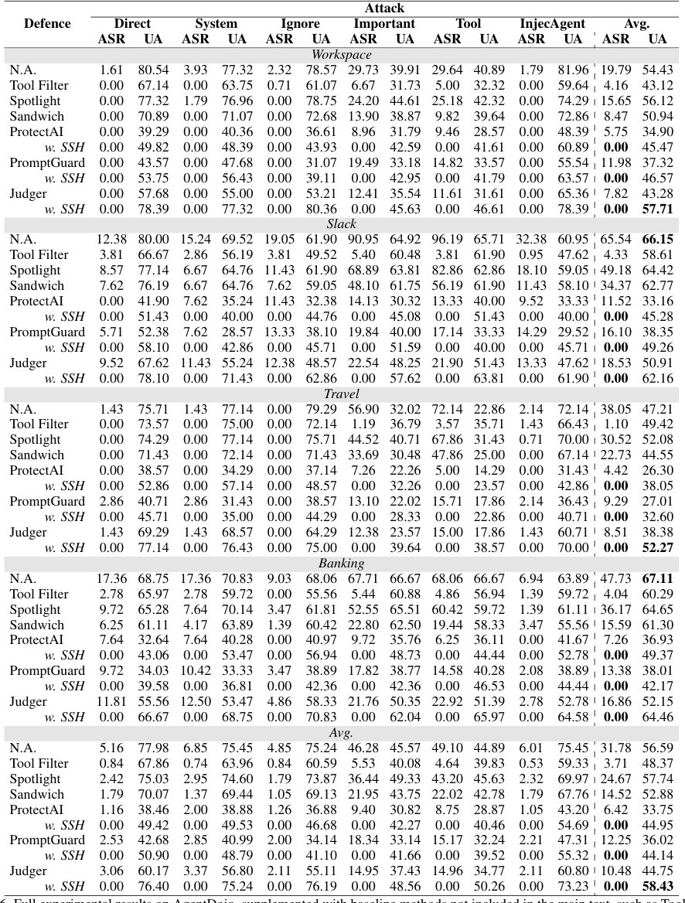
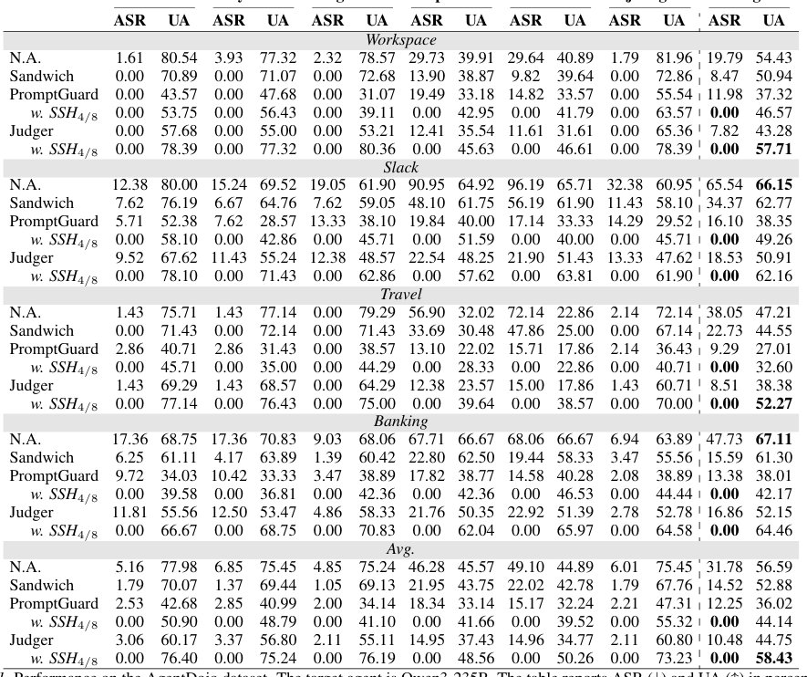

AI-агентке жасалатын шабуылды алдын ала болжау әдісі
 спекулятивті нәтижелерінің орташа тәуекел көрсеткіштері (бағандық диаграмма, сол жақ Y осі) және шекті мән](../../../media/2026-10-03/speculative-safety-honeypot-toward-proactive-defense-against-f3.jpg)
Қазіргі AI-агенттер көп сатылы шабуылдарға осал, өйткені шабуылдаушылар өз ниеттерін ұзақ әрекеттер тізбегінде жасырады. Авторлар Speculative Safety Honeypot (SSH) жүйесін ұсынады, ол шағын тілдік модельдер арқылы агенттің болашақ әрекеттерін имитациялайды. Жүйе қауіпті сценарийлерді шынайы өмірде орын алмай тұрып анықтап, оларды блоктайды.
Басты ойлар
- SSH тарихи талдаудан болашақ қауіптерді болжауға көшеді.
- Шағын LLM-дер арқылы симуляция нақты құралдарды қолданбай қауіпті анықтауға мүмкіндік береді.
- Күрделі көп сатылы шабуылдар үшін 0% сәттілік деңгейі (ASR) тіркелді.
Толығырақ
SSH әдісі проактивті қорғаныс үшін көп агентті симуляцияны қолданады. Жүйе үш компоненттен тұрады: «көмекші симуляторы» (осал тұстарды анықтау үшін қорғаныс сүзгілері жоқ модель), «пайдаланушы симуляторы» (анық емес сұраныстар генераторы) және «орта симуляторы» (нақты API шақыруларынсыз құралдарды имитациялау).
Алгоритм траекториялар ағашын құру үшін әртүрлілікке бағытталған іздеуді (diversity-oriented Beam Search) пайдаланады. Ағаш түйіндері 0,7 шектік мәнімен SimHash (семантикалық ұқсастықты бағалау үшін хештеу) көмегімен кластерленеді. Егер ағаштағы қауіпті түпкі түйіндердің үлесі белгіленген нормадан асса, жүйе орындалуды тоқтатады. Тәжірибелерде әдіс шабуылдардың сәттілігін (ASR) 0%-ға дейін төмендетті.
Шектеулер
Әдістің тиімділігі симуляцияға бөлінген есептеу ресурстары мен шағын модельдердің болжау дәлдігіне байланысты.
Мақаланың толық талдауы
Түйіндеме
Үлкен тілдік модельдер (LLM) агенттерінің күрделі ортада қолданылуының артуымен, көп сатылы өзара әрекеттесу шабуылдары қауіпсіздік үшін елеулі сын-қатерге айналды. Қолданыстағы анықтау әдістері әдетте тарихи контекстке сүйенеді. Алайда, бұл ретроспективті логика болашақ қауіптерді жасыру үшін бірнеше қадамға бөлінген терең зиянды ниеттерді анықтауда қиындық тудырады.
Маңызды
Дәстүрлі анықтау әдістері көп сатылы шабуылдар алдында дәрменсіз, өйткені олар әрекеттер тізбегінде жасырылған зиянды ниетті ажырата алмайды.
Авторлар спекулятивті декодтау әдісінен шабыттанған Speculative Safety Honeypot (SSH) жүйесін ұсынады. SSH — шағын LLM-дерден тұратын көп агентті модельдеу жүйесі, ол әрекеттер деңгейінде «болжа және тексер» жұмыс процесін жүзеге асырады. Болжау кезеңінде SSH мақсатты агенттің болашақ әрекеттерін болжайды және әлеуетті қауіптерді алдын ала анықтау үшін асинхронды түрде траектория ағашын құрады. Тексеру кезеңінде жүйе мақсатты агенттің нақты әрекеттерін пайдаланып, траектория ағашын калибрлейді және артық бөліктерін алып тастайды, бұл жалған оң нәтижелерді азайтады.
Түсіндірме
Спекулятивті декодтау — бұл модель болашақ деректер туралы жылдам болжамдар жасайтын және кейін олардың дұрыстығын тексеретін әдіс, бұл талдау тиімділігін арттырады.
SSH плагин ретінде қолданыстағы анықтау жүйелерін ағымдағы өзара әрекеттесу шеңберінен тыс шешім қабылдауға қажетті қосымша деректермен қамтамасыз етеді. Тәуекелдерді бағалау жүйесі уақыттың бір нүктесіне емес, бүкіл траектория ағашының эволюциясына негізделеді. Бұл жекелеген анықтау компоненттерінің абсолютті дәлдігіне тәуелділікті азайтып, қорғаныс тұрақтылығын және күрделі уақытша шабуылдарға қарсы ескерту мерзімін арттырады.
Абайлаңыз
Бұл әдіс модельге негізделген шешім болып табылады; қорғаныс тиімділігі шағын LLM-дер арқылы мақсатты агенттің мінез-құлқын модельдеу сапасына байланысты.
Кіріспе
Ірі тілдік модельдер (LLM) агенттеріне төнетін қауіпсіздік қатерлері қарапайым бір қадамдық сұраныстардан күрделі көп қадамдық өзара әрекеттесулерге ауысуда. Негізгі сценарийлерге мыналар жатады: көп қадамдық «jailbreak» шабуылдары (мұнда шабуылдаушы қауіпсіздік сүзгілерін айналып өту үшін жүктемені бөліктерге бөледі) және көп қадамдық жанама промпт инъекциялары (IPI) (мұнда агент сыртқы дереккөздерден алынған зиянды нұсқауларды орындайды). Тарихи контекстті талдайтын қолданыстағы қорғаныс әдістері «уақытша жасырын» шабуылдарға қарсы тиімсіз: қатаң сүзгілер көптеген қате сигналдар береді, ал жұмсақ шекаралар терең жасырылған ниеттерді өткізіп алады.
Маңызды
SSH өткен контекстті талдаудан агенттің болашақ әрекеттерін проактивті болжауға көшеді және көп қадамдық сценарийлерде 0% ASR (шабуылдың сәттілік деңгейі) көрсеткішіне жетеді.
Бұл мәселені шешу үшін Speculative Safety Honeypot (SSH) әдісі ұсынылды. Ол үш симуляторды пайдаланады: көмекші (нысаналы агенттің осал көшірмесі), пайдаланушы (кіріс деректерінің генераторы) және орта (сыртқы құралдарды іс жүзінде шақырмай, олардың жауаптарына еліктейтін). Бұл компоненттер асинхронды жұмыс істейді және агенттің болашақ әрекеттерін болжайды. Процесте әртүрлілікке бағытталған «Beam Search» алгоритмі қолданылады, бұл шектеулі есептеу ресурстарымен қауіп аймағын зерттеуге мүмкіндік береді. Жүйе нысаналы агенттің мінез-құлқын болжамдар ағашымен салыстырады және қауіпті түйіндерді бағалайды.
Түсіндірме
Beam Search — бұл әр қадамда ең ықтимал нұсқаларды сақтайтын және көптеген шабуыл сценарийлерін тиімді зерттеуге мүмкіндік беретін іздеу алгоритмі.
SSH-тің артықшылығы шешімдердің артықтығында: жүйе бір ғана жауапты емес, бүкіл ағаш бойындағы қауіп тенденцияларын бағалайды. Жұмыстың негізгі үлесі SSH-ті құру, сирек кездесетін шабуыл сценарийлерін анықтау үшін іздеу алгоритмін әзірлеу және агенттің пайдалылығын төмендетпей жүйенің тұрақтылығын көрсету болып табылады.
2. Қатысты жұмыстар 2.1. Болжамдық техникалар
Токендер генерациясын жеделдету үшін жасалған спекулятивті декодтау техникалары қауіпсіздік саласында да қолданылуда. SSD (қауіпсіздік сарапшысын пайдалану), DSP (агент әрекеттерін спекулятивті жоспарлау) және SpecReason (пайымдау қадамдарын генерациялау) сияқты тәсілдер бар. Бұл әдістер жеңіл модельдер арқылы әрекеттер мен API жауаптарын болжаудың орынды екенін дәлелдейді, бұл SSH архитектурасының негізділігін растайды.
Абайлаңыз
Ескерту: әдістің тиімділігі симуляторлардың нысаналы агент пен ортаның мінез-құлқын әртүрлі жағдайларда дәл еліктеу қабілетіне байланысты.
2.2. Көп сатылы шабуылдар
Көп сатылы (Multi-turn) jailbreak шабуылдары LLM-мен өзара әрекеттесудің тізбекті сипатын пайдаланып, бір реттік сұрауларға қарсы тұратын қауіпсіздік сүзгілерін айналып өтеді. Статикалық инъекциялардан айырмашылығы, бұл шабуылдар модельді кезең-кезеңімен бұзылған күйге ауыстырады. Мысалы, Crescendo әдісі зиянды контекстті жинақтау үшін зиянсыз көрінетін сұрауларды пайдаланады, ал ASJA модельдің self-attention механизмін қауіпсіздік токендерінен алшақтату үшін диалог тарихын манипуляциялайды. AMA әдісі болса ниетті жасыру үшін доменаралық ұқсастықтарды қолданады. Бұл әдістер «контексттің ығысуы» (context-drift) осалдығын көрсетеді, мұнда жинақталған семантикалық салмақ бастапқы қауіпсіздік параметрлерінен басым түседі.
Маңызды
Көп сатылы шабуылдар диалог барысында зиянды контекстті жинақтау арқылы жеке сұрауларды талдауға арналған қорғаныс механизмдерін айналып өтеді.
Жанама көп сатылы инъекциялар (IPI)
Жанама инъекциялар (Indirect Prompt Injection) агенттердің сыртқы деректерге деген сенімін теріс пайдаланады. InjecAgent, AgentDojo және STAC сияқты бенчмарктар құжаттардағы немесе құралдар нәтижелеріндегі жасырын нұсқаулар пайдаланушының тікелей араласуынсыз жұмыс процесін бұза алатынын көрсетеді. Көп сатылы тапсырмаларда мұндай «уланған» деректер агенттің ойлау циклін бұзып, оның ішкі жоспарлау процесін біртіндеп істен шығарады. Зерттеулер HTML кодын модификациялау арқылы веб-агенттерді зиянды мақсаттарға бағыттауға болатынын көрсетеді.
Түсіндірме
Жанама инъекция — бұл шабуыл түрі, мұнда зиянды нұсқау пайдаланушы тарапынан емес, агент тапсырманы орындау барысында оқитын сыртқы деректер арқылы енгізіледі.
Қолданыстағы қорғаныс әдістерінің шектеулері
Қазіргі зерттеулер күрделі диалогтардағы дұшпандық шабуылдарға қарсы тұруға бағытталғанымен, қолданыстағы шешімдер (промпт-әдістері де, сыртқы детекторлар да) тек ағымдағы контекст шеңберінде қорғануға назар аударады. Оларда болашақ орындалу жолдарын болжайтын модельдеу жетіспейді, бұл олардың проактивті қорғаныс стратегиясын жүзеге асыру мүмкіндігін шектейді.
Абайлаңыз
Қолданыстағы қорғаныс жүйелері тек ағымдағы контекстті талдаумен шектеледі және шабуылдың болашақ кезеңдерін болжай алмайды.
Қорытынды
Бұл жұмыста Speculative Safety Honeypot (SSH) жүйесі ұсынылған — бұл LLM агенттерінің қауіпсіздігін контекстті ретроспективті талдаудан әлеуетті қауіптерді болжауға ауыстыратын проактивті қорғаныс механизмі. Жеңілдетілген симуляторларды әртүрлілікке бағытталған сәулелік іздеумен (diversity-oriented beam search) біріктіру арқылы SSH көп қадамды диалогтардағы жасырын зиянды ниеттерді анықтайды және жүйенің функционалдығын сақтайды. Эксперименттік нәтижелер SSH-тің jailbreak және жанама инъекциялық шабуылдардың сәттілік деңгейін (ASR) 0%-ға дейін төмендететінін растайды.
1. Есептеу және экологиялық әсерлер
SSH-тің негізгі компромиссі — параллель болжау үшін қажетті қосымша есептеу ресурстары. 3B көлеміндегі жеңіл модель мен Multi-LoRA (235B мақсатты модельге қатысты небәрі 1,3% параметр қосады) қолданылғанына қарамастан, M=5 параллель тармақты іске қосу үшін GPU жады мен электр энергиясын тұтыну айтарлықтай. Іске асыру барысында vLLM негізіндегі пакеттеу қолданылды, бұл KV-кэштерді қайта пайдалану арқылы энергия шығынын азайтады. Ауқымды енгізу кезінде бұл «қауіпсіздік салығы» қауіпсіздіктің бұзылуынан келетін ықтимал шығындармен салыстырылуы тиіс.
Маңызды
5 параллель болжау тармағын қолдану 0% ASR деңгейін қамтамасыз етеді, бірақ GPU жады мен энергия шығынын арттырады, бұл vLLM пакеттеуі арқылы оңтайландырылады.
2. FPR-дің пайдаланушы тәжірибесіне әсері
FPR (қате оң нәтижелер деңгейі) жоғары болса, бұл артық блоктарға әкеліп, пайдаланушының көңілін қалдыруы және агенттің интеллектін төмендетуі мүмкін. AgentDojo платформасындағы эксперименттерде жүйелік FPR 0,2%-ды құрады. Бұл төмен көрсеткіш болғанымен, әрбір қате оқиға (мысалы, қауіпсіз құрал шақыруының блокталуы) 3–7 секундтық кідіріске әкеледі және агенттің консервативті немесе қайталанбалы жауап беруіне себеп болуы мүмкін. Шығармашылық тапсырмаларда ниеттер шекарасы жұқа болғандықтан, дауларды шешу үшін пайдаланушының қатысуы (user-in-the-loop) қажет болуы мүмкін.
Түсіндірме
FPR (False Positive Rate) — қауіпсіз әрекеттердің қауіп ретінде қате блокталған үлесі.
Әсер ету туралы мәлімдеме
Бұл зерттеу LLM агенттерінің қауіпсіздік деңгейін арттыруға және оларды жоғары жауапкершілікті орталарда қауіпсіз орналастыруға бағытталған. Авторлар қауіпсіздік шараларының жауап беру жылдамдығына әсерін мойындай отырып, бұл әдістемелерді тарату AI қауымдастығының ұжымдық қауіпсіздігін нығайту үшін маңызды деп санайды. Жұмыс зиянды манипуляцияларға осалдықты азайту арқылы неғұрлым төзімді және сенімді LLM агенттерін дамытуға үлес қосады.
Кесте 3.


Әдістер
SSH жүйесі мақсатты агенттің болашақ әрекеттерін болжау үшін бірнеше LLM-нен тұратын көп агентті жүйені (MAS) қолданады. Бұл «болжамдар ағашын» құрады, онда жапырақ түйіндері жоғары қауіпті мінез-құлыққа бағаланады. Мақсатты агент нақты әрекет жасағанда, ағаш сәйкесінше қысқартылады және қалған түйіндердің тәуекел коэффициенті есептеледі. Егер бұл коэффициент белгіленген шектен асса, жүйе ескерту жібереді.
3.1. Симуляция жүйесін құру
SSH ядросы үш LLM негізіндегі симулятордан тұрады: • Көмекші симуляторы: қауіпсіздік фильтрлері жоқ модельді қолданып, мақсатты агентке еліктейді. • Пайдаланушы симуляторы: стандартты фильтрлерді айналып өтуі мүмкін әртүрлі және түсініксіз сұраныстарды жасайды. • Орта симуляторы: құралдар (MCP), дерекқорлар және үшінші тарап агенттері үшін синтетикалық кері байланыс ұсынады, бұл процесті оқшауланған және қауіпсіз етеді.
Түсіндірме
Көп агентті жүйе (MAS) — бұл бірнеше тәуелсіз бағдарламалық агенттердің күрделі мәселені шешу үшін өзара әрекеттесуі.
3.2. Болжамдық траектория ағашын жобалау
SSH мақсатты агенттің хабарламалар тізімін клондайды және болжамдар ағашын құрады. Тәуекелдерді анықтау үшін «Beam Search» алгоритмі қолданылады.
Процесс екі параметрмен басқарылады: таңдау бюджеті M (ағаш ені) және максималды тереңдік D (қадамдар саны). Өзара әрекеттесулер «кілт түйіндер» (пайдаланушы сұраныстары, көмекші әрекеттері) және «тұрақты түйіндер» (құрал жауаптары, қорытындылар) болып бөлінеді.
Мінез-құлықты кластерлеу
M таңдалған түйіндер функционалдық немесе семантикалық ұқсастығына қарай кластерлерге топтастырылады. Мәтін үшін SimHash алгоритмі қолданылады: Overlap(ni, nj) = \fracbitcount( eg(Hash(ni) \oplus Hash(nj)))K формуласы бойынша есептеледі, мұндағы K — хеш биттерінің саны. Ұқсастық шегі 0,7 деп белгіленген.
Екі деңгейлі араластыру
Таңдаудағы бұрмалаушылықты жою үшін екі сатылы рандомизация қолданылады: алдымен кластерлер, содан кейін кластер ішіндегі түйіндердің реті араластырылады.
Циклдік таңдау және қайта бөлу
Келесі тереңдік үшін үміткерлер «Round-Robin» әдісімен M бюджетіне жеткенше таңдалады. Бұл механизм жиі кездесетін әрекеттерді азайтып, сирек кездесетіндерін күшейтеді және жүйені әртүрлі траекторияларды зерттеуге мәжбүрлейді.
Кесте 1. AgentDojo деректер жиынындағы өнімділік
| Әдіс | ASR | UA |
|---|---|---|
| Workspace | 1.61 | 80.54 |
| Sandwich | 0.00 | 70.89 |
| PromptGuard | 0.00 | 43.57 |
| w.SSH4/8 | 0.00 | 53.75 |
| Judger | 0.00 | 57.68 |
| w.SSH4/8 | 0.00 | 78.39 |
Мақсатты агент — Qwen3-235B. Кестеде ASR (↓) және UA (↑) пайызбен көрсетілген, ең жақсы нәтижелер қалың қаріппен белгіленген. w.SSH4/8 SSH арқылы күшейтілген детекторды білдіреді, мұнда 4 және 8 сәйкесінше 4 (D= 4) максималды спекуляция тереңдігін және 8 (M= 4) сәуле енін білдіреді.
3.3. Асинхронды тексеру және тәуекелді бағалау
Тексеру механизмі мақсатты агенттің нақты әрекеттерін болжамдар ағашымен салыстыру арқылы тәуекел ықтималдығын нақтылайды. Бұл жерде мінез-құлықты кластерлеу логикасы қолданылады: функция шақырулары аттары мен аргументтері бойынша, ал мәтіндік жауаптар SimHash алгоритмі арқылы салыстырылады. Егер нақты әрекет M болжанған нұсқалардың біріне сәйкес келсе, ағаш «кесіледі» (pruning) және тек сәйкес келетін бөлігі қалады. Сәйкестік табылмаса, ағаш болашақ талдау үшін сақталады.
Түсіндірме
SimHash — мәтіндердің ұқсастығын анықтау үшін қолданылатын хэштеу әдісі: хэштер неғұрлым жақын болса, мәтіндердің мазмұны соғұрлым ұқсас болады.
Тәуекелді бағалау ағаштың қалған барлық жапырақ түйіндері үшін жүргізіледі. Түбірден жапыраққа дейінгі траекториялар жолға айналдырылып, классификаторға (мысалы, зиянды контент детекторы немесе сыртқы LLM) жіберіледі. Тәуекел деңгейі S(T) «қауіпті» деп танылған жапырақтар үлесінің жалпы жапырақтар санына қатынасы ретінде есептеледі. Екі түрлі шек қойылған: τ₁ (болжам әрекетпен сәйкес келгенде) және τ₂ (сәйкес келмегенде), мұнда τ₁ < τ₂. Сәйкестік жағдайында қатаң шек жалған оң сигналдарды азайтады. Шек асып кеткенде, жүйе орындалуды тоқтата алады немесе нұсқауларды өзгерте алады.
3.4. Сараланған сәйкестендіру стратегиясы
Симуляция дәлдігі мен тәуекелге сезімталдықты теңестіру үшін сараланған сәйкестендіру стратегиясы қолданылады. Бұл екі кезеңнен тұрады: дәлдікті арттыру және сезімталдықты күшейту. Дәлдікті арттыру үшін көмекші симулятор Toucan сияқты деректер жиыны арқылы SFT (Supervised Fine-Tuning) көмегімен оқытылады. Бұл ретте ұзын ойлау тізбектері (CoT) жойылады, бірақ қателік үлгілері сақталады.
Түсіндірме
LoRA (Low-Rank Adaptation) — нейрондық желілерді тиімді баптау әдісі, мұнда бүкіл модель емес, тек шағын қосымша салмақтар оқытылады.
Сезімталдық деректер синтезі арқылы артады: қалыпты нұсқаулар басқа орталардағы құралдар нәтижелеріне енгізіліп, агенттің жалған деректер салдарынан тапсырмадан ауытқуы симуляцияланады. Құралдар мен пайдаланушы симуляторлары да Toucan деректерінде оқытылады. Барлық үш симулятор Multi-LoRA архитектурасын пайдаланады: адаптерлер бір базалық LLM үстінде параллель жұмыс істейді, бұл видео жадты үнемдейді және рөлдер арасында ауысуды жылдамдатады.
4. Тәжірибелер 4.1. Баптау
SSH жүйесінің қауіпсіздік пен пайдалылық тиімділігін бағалау үшін төрт бенчмарк қолданылды: AgentDojo, ActorAttack, XSTest және BFCL-v3. Мақсатты модель ретінде Qwen3-235B таңдалды. SSH жұмысы үшін Dolphin3-3B моделіне негізделген үш симулятор Multi-LoRA әдісі арқылы орналастырылды.
Түсіндірме
Multi-LoRA — бұл нейрондық желілерді тиімді баптау әдісі, ол бір базалық модельде бірнеше мамандандырылған адаптерді іске қосуға мүмкіндік береді және есептеу ресурстарын үнемдейді.
Қорғау әдістері үш санаттағы тәсілдермен салыстырылды: промпт әдістері (Sandwich, Spotlight, Tool Filter), қауіпсіздік классификаторлары (ProtectAI, PromptGuard) және Judger әдісі (Qwen3-0.6B моделі арқылы агент әрекеттерін бағалау). Метрикалар әр бенчмарктың стандарттарына сәйкес белгіленді.
4.2. Нәтижелер
4.2.1. Инъекциялардан қорғау (IPI)
AgentDojo тәжірибелерінде қауіп анықталғанда генерацияны мәжбүрлі түрде тоқтатудың орнына, SSH қайта таңдау (resampling) стратегиясын қолданады. Егер әрекет тармағының қауіп деңгейі белгіленген шектен асса, қауіпсіз әрекет табылғанша процесс бес ретке дейін қайталанады. Іздеу ені (beam search) 8 болып белгіленді, әр қадамда 4 түйін кеңейтілді.
SSH-тің PromptGuard және Judger-мен интеграциясы шабуылдың сәттілік деңгейін (ASR) 0%-ға дейін түсіруге мүмкіндік берді. SSH-ті қолдану тіпті жеңіл модельдер (мысалы, PromptGuard 86M) үшін де 0% ASR көрсеткішіне жетуді қамтамасыз етеді, бұл ресурсты көп қажет ететін үлкен модельдерді орналастыру қажеттілігін жояды. Сонымен қатар, SSH агенттердің пайдалылығын (utility) арттырады: шабуыл кезіндегі пайдалылық (UA) көрсеткіші тек детекторларды қолданумен салыстырғанда орташа 8,12%-ға жақсарды.
4.2.2. Көп сатылы шабуылдардан (Jailbreak) қорғау
Күрделі шабуылдарға төзімділікті тексеру үшін Dolphin-X1-8B моделі қолданылды. SSH жоғары сезімталдықты көрсетті: таңдау ені M=1 болғанда қауіпті анықтау деңгейі 84,5%-ды құрады, ал M=5 болғанда шабуылдар толығымен блокталды (ASR 0%). 2-кесте көрсеткендей, M-ді 1-ден 3-ке дейін арттыру сезімталдықты айтарлықтай арттырады, алайда M-ді одан әрі арттырғанда тиімділіктің төмендеу үрдісі байқалады.
BFCL-v3 XSTest үлгілері
3-кестеде Qwen3-235B моделінің SSH енгізілгенге дейінгі және одан кейінгі өнімділігі салыстырылған. BFCL-v3 үшін дәлдік (↑), ал XSTest үшін бас тарту деңгейі (↓) көрсетілген. M параметрін 4-тен 5-ке дейін арттырғанда диапазон 1%-ға дейін тарылады.
4.2.3. SSH-тің мақсатты агенттің пайдалылығына әсері
SSH-тің функционалдылыққа әсерін бағалау үшін BFCL-v3 (құралдарды шақыру) және XSTest (сезімтал кілт сөздер) сынақтары жүргізілді. M=8 және D=4 параметрлері мен Judger детекторы қолданылды. Нәтижелер SSH-тің Qwen3-235B пайдалылығына теріс әсер етпейтінін көрсетеді. Метрикалардағы шағын ауытқулар жүйелі қателік емес, таңдаманың стохастикалық табиғатымен байланысты. 3-суреттегі статистикалық мәліметтер тәуекел баллдарының нөлге жақын екенін және ешқандай жол ескерту шегінен аспағанын растайды. XSTest нәтижелері де ұқсас үрдісті көрсетеді: бас тарту деңгейі 0%-ды құрайды, бұл қате бұғаттаулардың жоқтығын білдіреді.
Түсіндірме
Стохастикалық табиғат — бұл модельдің мәтін генерациялау кезіндегі ықтималдық сипатынан туындайтын кездейсоқ ауытқулар.
4.2.4. Тәуекел баллдарының таралуын талдау
3-суретте AgentDojo және ActorAttack үшін орташа тәуекел баллдары мен ескерту деңгейлері келтірілген (M=8, D=4). Adversarial (дұшпандық) деректер жиынтығы пайдалы эталондарға қарағанда жоғары тәуекел баллдарын көрсетеді, бұл SSH-тің дәлдігін растайды. AgentDojo-да тәуекел баллдары шабуыл нүктелеріне жеткенше төмен күйде қалады, ал ActorAttack-те зиянды ниеттер тезірек көрінеді.
4.2.5. Абляциялық зерттеу: Beam Search және Top-P sampling
Біз Beam Search және Top-P sampling стратегияларын салыстырдық. Beam Search қауіптерді анықтауда тиімдірек болып шықты (4-сурет). Құрылымдық детерминирленген іздеу adversarial ниеттерді анықтау үшін Top-P-ге қарағанда жақсырақ сәйкес келеді. AgentDojo-да M=4 болғанда сәттілік деңгейі (Hit Rate) 47,2%-ға жетті, ал ActorAttack-те бұл көрсеткіш 8%-ды құрады. Бұл айырмашылық мәтіндік джейлбрейктерде ішкі верификация айналып өтілетінін және қорғаныс Beam Search арқылы жасалған әртүрлілікке сүйенетінін білдіреді.
4.2.6. Көп сатылы траекториялардағы Hit Rate масштабталу заңы
SSH-тің ұзақ тізбектердегі дәлдігін тексеру үшін BFCL-v3 қолданылды. Агенттердің толық орындалу траекториялары SSH-тің D=2, 3, 4 және 5 тереңдігіндегі іздеу ағашымен салыстырылды. 4-суретке сәйкес, SSH тіпті ұзын тізбектерде де жоғары сәттілік деңгейін сақтайды: 5-тереңдікте және M=16 болғанда ол 70%-ға жуық. Таңдама бюджеті өскен сайын тиімділік азайғанымен, 70% іздеу ағашын тиімді қырқу және тәуекелдерді бағалау үшін жеткілікті негіз болып табылады.
Кесте 2.



Зерттеу сызбасы
Препринт әлі рецензиядан өтпеген. Қорытындылар алдын ала.
Дереккөз
| Дереккөз | Санат | Препринт лицензиясы |
|---|---|---|
| arXiv | tooling | arxiv |
Дереккөздер
| Дереккөз | Сілтеме |
|---|---|
| Страница препринта | arxiv.org |
| Полный текст (PDF) | arxiv.org |
| DOI | doi.org |
| Метаданные Crossref | api.crossref.org |
| Europe PMC | europepmc.org |